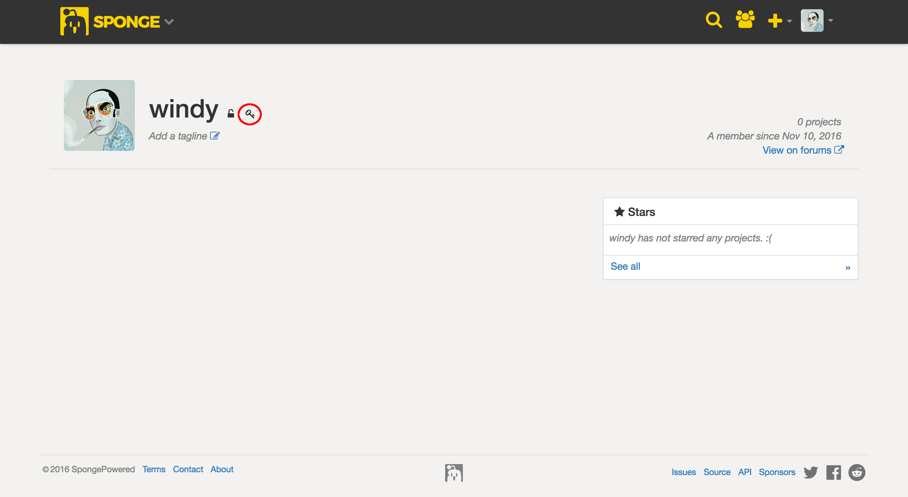

发布你的插件¶
作为 Sponge 的正式插件及 Mod 仓库，Ore 是一个免费的开源项目，任何人都可以在 Ore 上发布自己的 Sponge 插件或者 Forge MOD。
打包你的插件¶
Ore 要求任何项目的 JAR 压缩包都要封装一个位于根目录的用作描述符的 mcmod.info 文件。此文件用于自动推断一些有关项目的重要细节，使上传过程更容易。如果没有这个文件， Ore 将拒绝您的插件。幸运的是， SpongeAPI 有一个内置注解处理器，在编译时自动创建这个文件，使用你可能已经在插件的主类中的 @Plugin 注解中提供的描述。
注解
有关创建和编译你的第一个插件的详细信息，请参阅 插件的主类
这里是一个示例 mcmod.info 文件，以供参考︰
[
{
"modid": "my-plugin",
"name": "MyPlugin",
"version": "1.0.0",
"description": "My first plugin!",
"url": "https://spongepowered.org",
"authorList": [
"windy",
"Zidane",
"gabizou"
],
"requiredMods": [
"bookotd@1.0.0",
"ore-test@1.0.0",
"worldedit@1.0.0"
],
"dependencies": [
"bookotd@1.0.0",
"ore-test@1.0.0",
"worldedit@1.0.0"
]
}
]
最后，每个 Ore 项目 必须 有 modid 、 name 、以及 version 三个字段。
为你的插件签名¶
出于安全考虑， Ore 要求任何插件文件（ZIP 或 JAR 格式）在上传时须有 良好隐私密码法 (PGP) 产生的签名，此签名须通过与你注册 Sponge 时所用邮箱相关联的公钥的验证。该数字签名将确保文件上传者确为该账户实际持有人。
注解
数字签名可用于证明文件来源，并提供文件的时间戳。如果该文件此后被以任何方式窜改，签名验证将失败。藉由此，数字签名在起到了传统手写签名的作用的同时，还拥有防窜改的特性。例如，GnuPG 发布源即带有数字签名，这样一来用户便可以验证其是否在打包发布后被二次窜改。
为签名你的插件，你必须首先下载可兼容 PGP 的软件，例如 GnuPG (GPG) 。GPG 可在所有主流操作系统上运行，其二进制文件可在 这里 下载。
在安装 GPG 后你需要先生成你的第一个公钥，然后你需要将其添加至你的帐户上。此步骤可在你的个人资料页面中点击你头像旁的钥匙符号完成。
在点击后，页面将提示要在文本框中输入公钥。输入不完整的公钥将会导致签名验证失败。

最后，你需要用 私钥 来为你构建完成并准备上传的插件签名。你只需要为你上传的文件签名。举个例子，如果你要上传的是一个含有你的插件本体 JAR 文件的 ZIP 压缩包，只有 这个压缩包需要签名。最简单的签名方法是使用下列 GPG 命令。
gpg --output myplugin-1.0.0.jar.sig --detach-sig myplugin-1.0.0.jar
上传你的插件¶
在你的插件 JAR 文件与位于根目录的 mcmod.info 打包在一起，并经过你的 PGP 私钥签名，你的插件就可以上传了！首先要在 Ore 上新建一个项目。自然地，你需要有一个已激活的 Sponge 帐户。若没有，可点击右上角的 “Sign up” （注册）按钮注册一个。若已有 Ore 帐户，点击右上角的 “Log in” （登录）按钮来登录 Ore。
登录后，把鼠标移动到您的头像，在下拉菜单中点击 “New” （新建）选项，或按下C键。
上传时，新建向导会先要求上传主要文件，然后要求上传公钥。
在 Ore 上设置你的项目¶
在上传完插件后，你便可以按你的想法来对项目进行管理。不要担心，所有设定都可以随时在设置面板中修改。在建立你的项目之后，你可以邀请其他 Sponge 用户成为你项目的成员，即使他们从来没有登录过 Ore 也可以。在项目创建完成后，你邀请的用户将会收到通知，他们可选择接受或拒绝你的邀请。项目成员在接受邀请前对外不可见。
目前你可以将项目成员分成三组：开发者 (Developer) 、编辑者 (Editor) 、以及技术支持 (Support) 。创建项目的用户将自动成为所有者 (Owner) ，其访问该项目时不受任何限制。下面是对各个分组的功能的简介。
所有者¶
一个项目只可能有一个所有者，目前不可转让，且是唯一一位拥有指派项目中其他成员权限的人。
开发者¶
开发人员可以创建/编辑释放渠道、 页面和创建编辑版本。
编辑者¶
编辑者可编辑页面。
技术支持¶
技术支持无任何实质权限，仅用于标记项目成员。
使用 Pages 来托管你的项目文档¶
你可以利用 Ore 提供的 Pages 功能来为你的项目提供文档。在你新建项目之初，默认会为你生成一个 ‘Home’ 页面（即主页）。点击 Pages 界面右边的工具条上的 ‘+’ 图标即可新增页面；点击后会弹出一个窗口要求你指定页面名称和上一级页面（但不能在 Home 页的基础上新增页面）。如果你选择了 ‘<None>’，新的页面将会成为根页面，你可以随后在这个页面的基础上追加子页面。如果你指定了上一级页面，这个页面将只会在这个展开时显示。文档的撰写可以使用 CommonMark。
页面之间的链接¶
如果你的页面有这样的树形结构：
- Home
- Commands
- User
- Admin
- Setup
- Config
- Permissions
同时你想在你的主页中提供一个直达 Setup 页面下的 Config 页面的链接，你可以使用 WikiLinks 功能来做到这一点。WikiLink 的格式是这样的：[[Link]]，也就是说，只要这样写：[[Setup/Config]]，就会生成直达 Setup 页面下的 Config 页面的链接了。
注解
你还可以为链接提供自定义标题，标题与链接之间用管道符号（|）分开，即形如 [[Title|Link]]，这样产生的链接就会显示为“title”。
注解
WikiLinks 只在 Ore 中有效，所以如果你在你的 Pages 主页中使用了 WikiLinks，在论坛里这些链接是无法正确显示的。尽管如此，我们仍然建议使用 WikiLinks 而不是普通链接，这样可以保证你的 Wiki 页面在未来能正常工作。
项目状态¶
在新建项目后，你会发现一个告知你项目处在“new”状态的状态条。这个状态用于告知用户和管理员：你还没有完全配置好你的项目。如果你已完成了插件的文档，并已确认所有内容均符合指南，点击“publish”按钮以完成配置过程。但是，如果你不手动点击发布的话，你的项目会在创建 24 小时后自动发布。
需要更改（Needs Changes）¶
Ore 的工作人员可以隐藏你的项目并要求更改，要求更改的内容会在状态条中列出。这个状态下，其他人不能看到你的项目。更改完成后，你可以发送审核请求。
需要审核（Needs Approval）¶
在这个状态下，你的项目仍然不对外界可见，工作人员会复查并确认所有要求的更改是否都已达到要求。这个时候请务必耐心等待，因为工作人员通常还身兼数职，不一定有时间。通过审核的项目会自动对外界可见。请务必确保你覆盖到了所有要求更改的点。